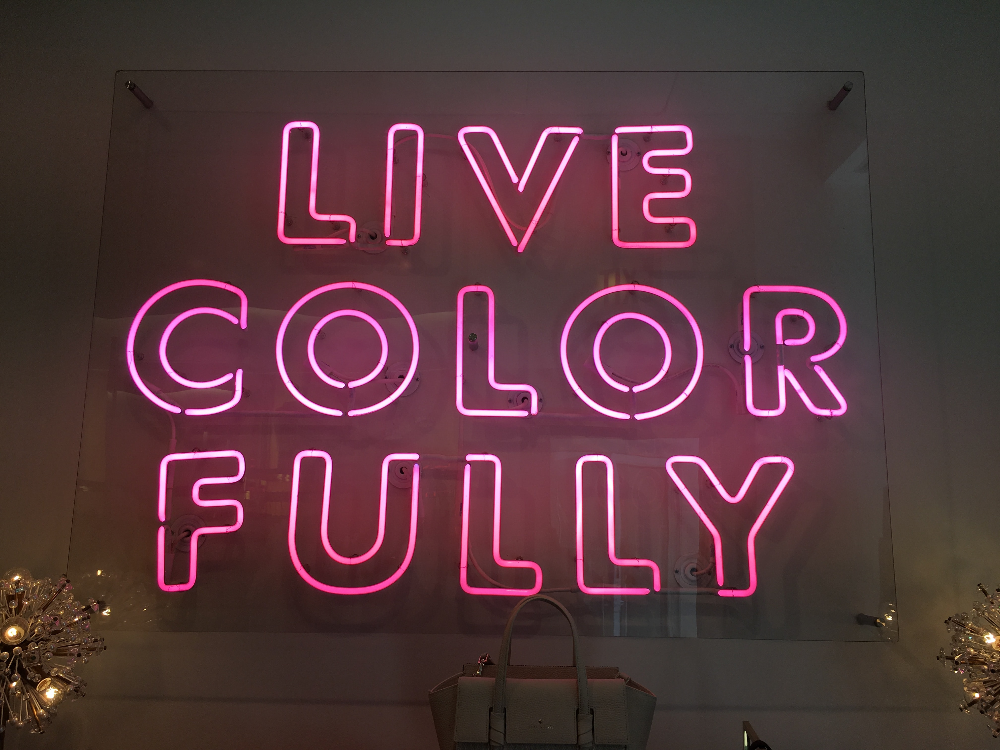
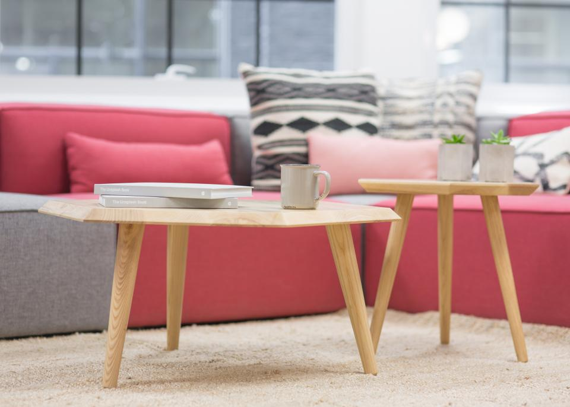

Coding and design and marketing, oh my! Get an insight into my world.
View my Portfolio >

As Neiman Marcus once said, women who wear black lead colourful lives.
Read About Me >

Flexible working means my office can be anywhere (but usually it's my kitchen bench).
Get in touch >